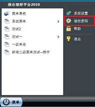
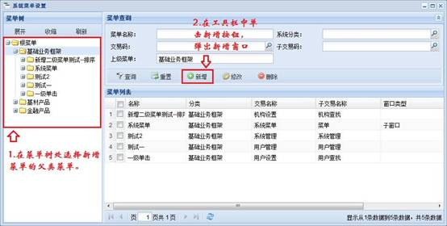
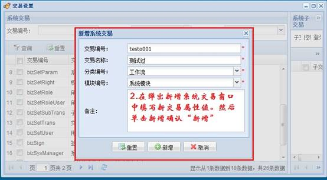
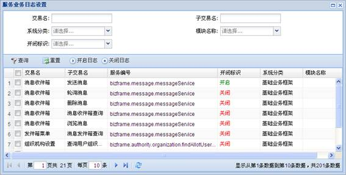
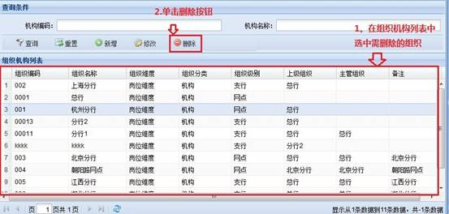
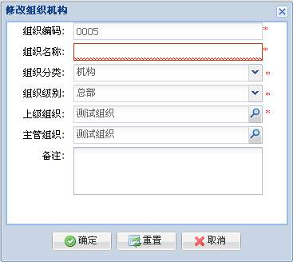
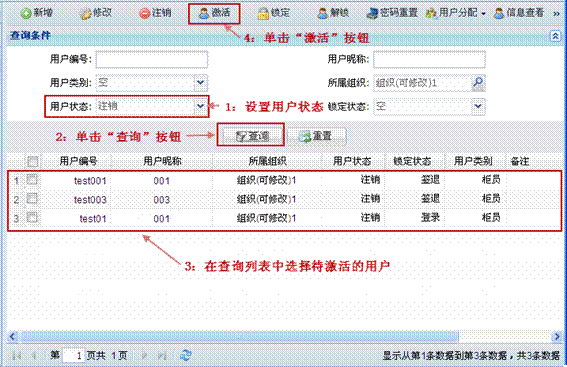
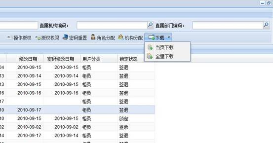
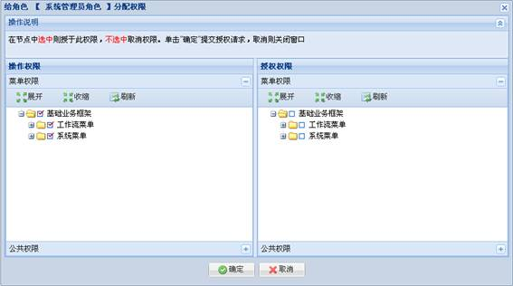

基础业务框架子系统是将业务中需要的数据字典、系统参数、菜单管理、标准字段、用户管理模块化。作为一个完整的基础业务管理平台提供给用户，主要包含系统管理和用户管理两大模块。
现行基础业务框架子系统包含以下具体功能：
l 系统管理
-
系统参数设置
-
数据字典设置
-
系统类别设置
-
系统交易设置
-
系统缓存设置
-
系统菜单设置
-
页面缓存设置
-
业务日志设置
l 用户管理
-
机构管理
-
角色管理
-
用户管理
-
岗位设置
l 平台管理
-
在线监控
l 消息管理
-
消息收件箱
-
消息发件箱
本系统登录设置了超时机制，如果在限制的时间内用户没有进行操作，服务器则会将此用户的会话销毁，此时用户需重新登录。后续版本会逐步实现单点登录等功能。
初始用户名：admin
密码：111111
登录界面如下图所示：
用户可以在登录时候选择相应的风格，当前本系统的界面模式包括两种：普通式操作界面、桌面式操作界面。
系统新建用户时，默认的初始用户密码为111111。用户首次登录系统时，系统会弹出修改密码的窗口。如果不修改密码，则不能进行其他操作。密码修改窗口如下图所示。
修改密码时需注意：
l 密码长度最少为6位，最长32位
l 密码复杂度由密码的字符组成所决定，最好数字、小写字母、大写字母、特使字符全部包括。
当前本系统的界面模式包括两种：普通式操作界面、桌面式操作界面。
如果在登录时选择了桌面风格，则登录成功后会会进入桌面模式。桌面模式如下图所示。
图 1‑1桌面风格主页
桌面模式的主页中各部分的含义如下：
l 桌面菜单栏：为系统菜单，可以双击桌面菜单栏的顶层来展开或收缩菜单栏。
l 桌面开始栏：是模仿XP系统的“开始”菜单，方便用户操作。单击桌面左下角的“菜单”按钮，开始栏给弹出，此控件展示用户信息和系统菜单的。
l 桌面窗口状态栏：用于显示工作区已打开窗口的状态。如果工作区有打开的窗口，则桌面窗口状态栏显示一个关联此窗口的“按钮”，右键此按钮可以最大化、最小化窗口、还原此窗口。具体如下图所示。
l 桌面工作区：用于存放在桌面打开的窗口，在此区域可以任意摆放已经打开的窗口。
l 桌面右键菜单：在桌面工作区右键则会弹出一个右键菜单，右键菜单有隐藏导航菜单、显示导航菜单以及页面刷新功能等菜单项。如下图所示。
还原、隐藏菜单栏
由于桌面的菜单比较多，为方便用户快捷的操作，在桌面上方增加了一个桌面的菜单，此桌面的菜单可以在“桌面的菜单的自定义”中单击隐藏导航菜单来隐藏，从而获取更大的工作空间。
导航菜单隐藏之后，可以通过桌面右键选中“显示导航菜单”来还原。
l 隐藏菜单导航方法
-
通过页面自定义下的隐藏导航菜单。
-
通过桌面右键菜单中的“隐藏导航菜单”项。
l 还原菜单导航
收缩、展开隐藏菜单导航栏
在菜单导航的标题栏上双击，则可收缩和展开菜单导航。
l 收缩菜单导航
l 展开菜单导航
在登录时选择了“普通”模式，则登录成功后会进入普通模式的主页，普通模式主页如下图所示。

图
1‑2普通风格主页
普通风格的主页包括以下部分：
l logo区：包括logo、用户信息、帮助、退出、修改密码等。
l 工具栏：包括系统的根菜单，可以单击这些按钮改变功能导航区的菜单。
l 工作区：展示在功能导航区打开的窗口。
l 状态栏：展示系统当前时间的区域。
用户可以在登录系统之后相互切换主页风格。用户可通过“菜单栏à自定义à切换主页”菜单项切换风格。
用户首次登录系统时，系统会弹出密码修改窗口，方便用户修改初始密码。具体介绍请参见“1.1登录系统”。
用户修改密码的方法如下：
l 若用户在默认主页，则在信息区单击“修改密码”按钮（如下图所示），则会弹出一个密码修改页面。
l 若用户在桌面式主页，则在左下角单击菜单按钮，在弹出的窗口中单击“修改密码”按钮。如下图所示。

通过以上操作，密码修改窗口对话框显示。
修改密码时需注意：
l 密码长度最少为6位，最长32位。
l 密码复杂度由密码的字符组成所决定，最好数字、小写字母、大写字母、特殊字符全部包括。
说明
系统当前设置的用户初始密码为“111111”，可通过系统参数设置页面的defaultUserPassword修改，也可在配置文件中设置(详细设置请查阅《基础业务框架配置说明》)， 系统参数优先于配置文件。
用户如果已完成工作或者离开系统，则需要单击“退出”页签。
l 如果在默认主页，在信息区单击“退出”按钮（如下图所示），则会弹出一个确认退出的提示框。
l 如果在桌面式主页，则在左下角单击菜单按钮，在弹出的窗口中单击“退出”按钮。如下图所示。
通过以上操作，“签退”提示框显示。
选择“确定”提交退出请求，选择“取消”撤消退出操作。
1.5 同步授权操作
为提高安全性，系统使用了同步授权功能。同步授权是指用户在进行一个操作时需要相同部门的一个人员输入用户名和密码的确认。
同步授权窗口如下图所示。
在同步授权窗口输入授权人的用户名和密码后，单击“确定”则可以继续进行此操作，单击“取消”撤消授权操作。
同步授权时，请注意授权者的直属机构或者关联机构必须是被授权者机构或者关联机构的上级机构或同级机构。
说明
同步授权是否开启通过“系统参数设置”页面的startSynchAuthorize设置，也可在配置文件中设置(详细设置请查阅《基础业务框架配置说明》)，系统参数优先于配置文件。
当系统其它用户发送消息给当前用户时，系统状态栏中的右下方的消息提示图标会显示闪烁的效果。单击该图标，弹出消息提示框。在提示框中选中一条消息查看，即可弹出消息查看窗口。
具体操作如下所示：
1.)
点击消息提示图标。
2.)
未读消息列表显示。
3.)
单击未读消息，即可弹出查阅窗口。
如果系统用户需查询系统在线用户，则需在系统状态栏中单击在线人数，即可查询最新的在线人数。
当用户在设置的时间内未操作，则系统会弹出遮罩，让用户重新登录。在登录框中输入当前用户名和密码即可登录成功。
重新登录框还会在当前用户会话失效时弹出，这时也需要重新输入当前用户名和密码登录。

说明
锁屏的超时时间可通过“系统参数设置”页面的lockScreenInterval设置，也可在配置文件中设置(详细设置请查阅《基础业务框架配置说明》)，设置lockScreenInterval属性，以分钟为单位，默认为10分钟。
系统参数优先于配置文件。
系统管理模块由系统类别设置、系统参数设置、数据字典设置、系统菜单设置和交易设置组成。
系统类别设置是指提供类别信息的同级新增、下级新增、修改、删除、查询功能；系统参数设置是指将系统中可配置参数统一管理；数据字典设置供给基于平台进行应用开发的开发人员自主定义和维护数据字典的功能并供给最终应用用户自主维护数据字典的功能。
系统类别设置用于统一管理系统中的资源分类。
系统中的资源包括：数据字典，系统参数，标准字段，系统资源，系统菜单，子系统等等。
系统类别设置的路径是“系统菜单à系统管理à系统类别设置”。
当用户在功能导航中选择了系统类别设置，则可以选择某一维度设置适合自己的类别结构，操作界面如图 2‑1所示。
图 2‑1系统类别设置界面
用户在系统类别设置页面中可进行新增、修改、删除、查询等操作。
新增系统类别的方法如下。
1.)
在分类树中选择系统类别的维度，并选择具体的类型。
2.)
单击“新增”，新增分类对话框显示。各参数含义如下：
-
分类编号：必填、不允许重复、由英文、数字和下划线组成、最大输入长度为32个字符。
-
分类名称：必填，可重复、由中文英文和数字组成、最大输入长度为12个字符。
-
助记符：必填，不允许重复、由英文和数字组成、最大输入长度为8个字符。
-
备注：可选、由中文英文和数字组成、最大输入长度为256个字符。
3.)
设置完相关参数后，单击“确定”按钮。
4.)
系统显示确认新增提示框，单击“是”，确定新增；单击“否”，取消操作。
类别删除的方法如下：
1.)
在类别列表中选择待删除的类别。
2.)
单击“删除”按钮。
3.)
单击“删除”按钮后，系统显示如下提示框。单击“是”，确定操作；单击“否”，取消操作。
删除类别时，请注意以下事项：
l 删除项可以单选、多选或全选。
l 在提示窗口中选择“否”按钮可以取消当前删除操作。
l 一旦删除数据请求提交成功，则无法在此系统中恢复，须谨慎。
l 系统类别根节点是系统初始化时插入数据库中的，所以在页面中无法删除。
类别修改方法如下：
1.)
在系统类别列表中选择待修改的类别记录，单击“修改”按钮。
2.)
修改类别对话框显示，修改相关参数。修改完毕，单击“确定”按钮。
-
除“上级分类”、“分类编号”和“类型”不可编辑外，其余信息可以编辑。
-
分类名称，必填，不允许重复、由中文英文和数字组成、最大输入长度为12个字符。
-
助记符，必填，不允许重复、由英文、数字和下划线组成、最大输入长度为8个字符。
-
备注，可选、由中文英文和数字组成、最大输入长度为256个字符。
3.)
单击“确定”后，系统显示如下提示框。单击“是”，确定操作；单击“否”，取消操作。
类别查询方法如下图所示，在查询条件区域设置相关条件；单击“查询”按钮。
查询时，需注意以下事项：
l 所有条件为空查询时，查询的是全部类型
l 只有“名称”和“备注”支持模糊查询，其它条件仅支持精确查询
系统参数是表征系统组件特性的量，也即系统运行的参数或变量。
系统参数包括系统中的基本参数和自定义的参数，例如系统中最大允许密码错误次数，密码
有效时间单位等。
系统参数设置操作的基本路径是“系统菜单à系统管理à系统参数设置”。
当用户在功能导航中单击了“系统参数设置”，则可以在工作区进行系统参数管理，操作界面如图 2‑2所示。
图 2‑2系统参数管理页面
用户在系统参数设置页面中可进行新增、修改、删除、查询等操作。
系统参数新增方法如下。
1.)
在分类树中选择系统参数类别，单击“新增”按钮。
2.)
“新增参数”对话框显示，各参数含义如下：
-
参数编号：必填，不可重复、由英文、数字和下划线组成、最大输入长度为32个字符。
-
参数名称：必填，可重复、由中文英文和数字组成、最大输入长度为32个字符。
-
参数类别：必填，不可重复、由英文、数字和下划线组成、最大输入长度为32个字符。
-
参数值：必填，可重复、由中文、英文和数字组成、最大输入长度为1024个字符。
-
所属组织：必填，关联机构必须在弹出列表中选择系统已有的类别。
-
备注：参数的说明信息。
设置相关参数后，单击“确定”按钮。
3.)
系统显示确认新增提示框，单击“是”，确定新增；单击“否”，取消操作。
新增参数需注意一下事项：
1：如果是新增走马灯效果效果参数（编号为bizMarquee），参数值需是一个html标准标签或者一段纯文字，否则会导致渲染出问题。
参数值样例：<a href=”http://www.baidu.com “ target=”_bank” >百度下</a>
系统参数删除方法如下：
1.)
在系统参数列表中选择待删除的记录，单击“删除”按钮。
2.)
单击“删除”按钮后，系统显示如下提示框。单击“是”，确定操作；单击“否”，取消操作。
删除系统参数时，需注意以下事项：
l 删除项可以单选、多选或全选。
l 在提示窗口中选择“否”按钮可以取消当前删除操作。
l 一旦删除数据请求提交成功，则无法在此系统中恢复，须谨慎。
系统参数修改方法如下：
1.)
在系统参数列表中，选择待修改的参数记录；单击“修改”按钮。
2.)
修改参数对话框显示，各参数编辑方法如下：
-
除“参数编码”、“参数类别”和“所属组织”设为不可编辑，其余输入项可以编辑。
-
参数名称：必填、可重复、由中文英文和数字组成、最大输入长度为32个字符。
-
参数值：必填、可重复、由中文英文和数字组成、最大输入长度为1024个字符。
修改完毕，单击“确定”按钮。
修改时需注意：
1：如果是修改走马灯效果效果参数（编号为bizMarquee），参数值需是一个html标准标签或者一段纯文字，否则会导致渲染出问题。
参数值样例：<a href=”http://www.baidu.com “ target=”_bank” >百度下</a>
系统参数查询方法如下：
在查询条件区域设置相关条件，单击“查询”按钮。
查询时，注意以下事项：
l 所有条件为空查询时，查询的是全部参数。
l 只有“代码”、“类别”、“名称”支持模糊查询，其余是精确查询。
数据字典是系统中各类数据描述的集合。字典中的每个条目都对应一类数据描述的枚举，条目中的字典项则对应具体的枚举值。平台应提供给基于平台进行应用开发的开发人员自主定义和维护数据字典的功能；平台应提供给最终应用用户自主维护数据字典的功能；平台应提供给接入平台应用的第三方系统访问数据字典信息的服务。
数据字典管理的基本路径是“系统菜单à系统管理à数据字典设置”。
当用户在功能导航中单击了数据字典设置，则可以在工作区进行数据字典的相应管理，操作界面如图 2‑3所示。
图 2‑3数据字典管理页面
数据字典管理具体分字典条目及字典项管理。
说明
如果系统开启了页面缓存机制，则需要刷新页面缓存才能使数据字典页面的新操作（新增、修改或删除数据字典）立即生效。如果没开启页面缓存，无需刷新。
字典条目新增方法如下：
1.)
在图 2‑3所示页面中，单击“新增”按钮。
2.)
添加字典条目窗口显示，各参数含义如下：
-
条目编号：必填、不可重复、由英文、数字和下划线组成、最大输入长度为32个字符。
-
条目名称：必填、可重复、由汉字英文和数字组成、最大输入长度为32个字符。
-
分类编号：不为空，必须在弹出窗口中选择。
-
备注：选填、最大输入长度为256个字符。

3.)
设置完相关参数后，单击“确定”按钮。
4.)
系统显示确认新增提示框，单击“是”，确定新增；单击“否”，取消操作。
字典条目删除方法如下：
1.)
在字典条目列表中选择待删除的字典条目。
2.)
在字典项列表中删除所有的字典项。
3.)
单击字典条目列对应的“删除”按钮。系统弹出“删除”提示框，单击“是”，确认删除；单击“否”，取消操作。
4.)
系统显示删除提示框，单击“是”，确认操作；单击“否”，取消操作。
删除过程中，需注意以下事项：
l 删除项支持可多选或全选。
l 平台级别的数据字典不可删除
l 在提示窗口中选择“否”按钮可以取消当前删除操作。
l 一旦删除数据请求提交成功，则无法在此系统中恢复，须谨慎。
l 删除条目前，需先删除其包括的字典项。
字典条目修改方法如下：
1.)
在字典条目列表中选择待修改的字典条目记录。
2.)
单击“修改”按钮。
3.)
修改字典条目对话框显示，修改相关参数。修改完毕，单击“确定”按钮。
-
除字典条目编号和分类编号不可修改外，其余项都可修改。
-
字典条目名称是必填、可重复、由中文英文和数字组成、最大输入长度为32个字符。
-
备注是选填、最大输入长度为256个字符。
4.)
单击“确定”，提交修改请求。
字典条目查询方法如下：
在查询条件区域设置相关条件，单击“查询”按钮。
查询时需注意以下事项：
l 所有条件为空查询时，查询的是全部记录。
l “条目名称”支持模糊查询，“条目编码”是精确查询。
字典条目下载是以Excel文件形式把系统中的字典条目下载至本地。下载分为当页下载和全量下载两种方式，当页下载是指下载数据表格当前页码中的数据，而全量下载是下载全部数据。
字典条目下载方法如下：
1.)
单击“下载”对应的下拉按钮，选择下载方式。
2.)
选择下载方式，在下载框中选择保存路径即可，如下图所示。
字典项是字典条目的枚举值。字典项的添加方法如下：
1.)
在分类树中，选择字典条目所属的数据类型。
2.)
在字典条目列表中，双击待添加字典项的字典条目。字典项对应的“新增”按钮激活。
3.)
单击字典项对应的“新增”按钮。
4.)
在字典项列表中的空白行中输入字典项相关信息。
-
代码必填、同级不可重复、由英文、数字和下划线组成、最大输入长度为32个字符。
-
名称必填、同级不可重复、由中文英文和数字组成、最大输入长度为32个字符。
-
可以连续新增字典项，最后一次性保存提交。
5.)
单击字典项对应的“保存”按钮。
字典项删除方法如下：
1.)
在字典条目列表中，选择待删除字典项的字典条目。
2.)
在字典项列表中，选择待删除的字典项。单击“删除”按钮。
3.)
单击“保存”按钮。
删除字典项时，注意以下事项：
l 删除项只可以单选，不支持可多选或全选。
l 可以连续删除，最后提交保存一次（批量删除）
l 一旦删除数据请求提交成功，则无法在此系统中恢复，须谨慎。
系统菜单是系统中各功能的导航。系统中各个功能的调出都是通过菜单的触发调出的。
菜单设置包含菜单管理和子功能的管理，菜单子功能是指菜单中包含的功能。例如用户菜单包含用户新增、用户修改和用户授权，则对应于用户菜单就有用户新增子功能、用户修改子功能和用户授权子功能，只有在系统菜单设置页面中设置了这些子功能，才能进行权限和业务日志的处理。
系统菜单管理的基本路径是“系统菜单à系统管理à系统菜单设置”。
当用户在功能导航中单击了“系统菜单设置”，则可以在工作区进行系统菜单的相应管理，操作界面如下图所示。
图
2‑4系统菜单设置页面
系统菜单新增方法如下：
1.)
在菜单树中选择待新增菜单的节点，单击“新增”按钮。新增菜单窗口显示。

2.)
在新增菜单窗口中，填写新增菜单的属性值。设置完毕，单击“确定”按钮。
-
菜单编号：必填、不允许插入重复、由英文、数字和下划线组成、最大输入长度为32个字符。
-
菜单名称：必填，可重复、由中文英文和数字组成、最大输入长度为32个字符。
-
系统分类：必填，不允许重复、由中文英文和数字组成、最大输入长度为32个字符。
-
快捷键为可选输入，长度为8个字符。
-
其余是可选、由中文英文和数字组成、最大输入长度为256个字符。
3.)
设置完毕，单击“确定”按钮。
4.)
系统显示确认新增提示框，单击“是”，确定新增；单击“否”，取消操作。
系统菜单修改方法如下：
1.)
在菜单树中选择待修改菜单所属的根节点。
2.)
在菜单列表中，选择待修改的菜单，单击“修改”按钮。
3.)
修改菜单窗口显示，在窗口中修改相关参数。
-
除菜单编号、系统分类、上级菜单不可修改外，其余参数均可修改。
-
菜单名称是必填，可重复、由中文英文和数字组成、最大输入长度为32个字符。
-
快捷键可选填，最大长度为8。
-
其余可选、由中文英文和数字组成、最大输入长度为256个字符。
4.)
修改完毕，单击“确定”按钮。系统修改菜单成功。
系统菜单删除方法如下：
1.)
在菜单树中选择待删除菜单所属的根节点。
2.)
在菜单列表中，选择待删除的菜单，单击“删除”按钮。
3.)
系统弹出删除提示窗口，如下图所示。
4.)
选择是“是”确认删除操作，“否”则是撤消删除操作。
删除菜单时，注意以下事项：
l 删除项可以单选、多选或全选。
l 在提示窗口中选择“否”按钮可以取消当前删除操作。
l 一旦删除数据请求提交成功，则无法在此系统中恢复，须谨慎。
系统菜单查询方法如下：
在查询条件区域设置相关条件，单击“查询”按钮。
修改菜单时，需注意以下事项：
l 所有条件为空查询时，查询的是全部类型
l 只有菜单名称支持模糊查询，其余是精确查询
l 为减少服务器压力，模糊查询采用向右匹配原则，即 like XXX% 方式，因此字符串左部不做模糊匹配，
系统支持导出菜单的功能，菜单导出是导出菜单的Sql语句。系统菜单导出方法如下：
1.)
单击“导出”按钮。
2.)
选择文件保存的位置。
系统支持调整系统菜单顺序的功能。菜单顺序是指菜单在用户界面上展示的顺序，越小排至越前。
系统菜单顺序调整方法如下：
在菜单列表中，选择待调整顺序的菜单项（只支持单选），根据需要单击“上移”或“下移”按钮。
系统支持根据菜单授予用户权限。以菜单授权给用户权限时，系统默认把此菜单及其下所有子菜单全部授予被授权用户。如果被授权用户拥有此菜单及其子菜单的的全部权限则表示已授权，反之则无授权。
菜单操作授权是指用户可操作的资源，即登录到系统其可见的菜单；菜单权限授权是指用户可授权的权限资源，也即用户是否可以把此权限授权给其他用户。
具体操作如下：
1.)
选择菜单，单击工具栏的“用户授权”按钮。
2.)
在弹出用户选择窗口中选择需授权的的用户。
-
在用户列表中选择未授权的用户，单击“授权”按钮，将菜单操作权限赋予已选择用户。
-
在用户列表中选择已授权的用户，单击“取消授权”按钮，取消已选择用户的菜单操作权限。
3.)
授权结果提示。
-
授权成功
-
如果用户已经拥有此菜单的权限，则会弹出“用户：XXXXX 有此菜单的权限，无需授权!”
-
如果是取消授权并此用户无权限则会弹出
“用户：XXXXX 无菜单的权限，无需取消!”
系统支持根据菜单授予角色权限。以菜单授权给角色权限时，系统默认把此菜单及其下所有子菜单全部授予被授权角色。如果被授权角色拥有此菜单及其子菜单的的全部权限则表示已授权，反之则无授权。
角色授权包括角色操作授权和角色权限授权两种类型。
角色操作授权是指角色可操作的资源，即拥有该角色的用户登录到系统其可见的菜单。
角色权限授权是指角色可授权的权限资源，也即拥有该角色的用户是否可以把此权限授权给其他用户。
角色授权方法如下：
1.)
选择菜单，单击工具栏的角色授权按钮。
2.)
在弹出用户选择窗口中选择需授权的的用户。
3.)
授权提示说明。
-
如果授权成功则会提示：
-
如果是授权菜单，并此角色已经有此菜单权限，则提示“角色：XXX有此菜单的权限，无需授权！”
-
如果当前用户无权访问此角色，则提示“你无操作角色：XXX的权限！”
用户可通过以下两种方式显示菜单子功能新增页面：
l 菜单新增成功之后，继续新增菜单子功能
l 选择菜单修改
通过以上操作方式，可显示如下页面。
新增子功能的方法如下：
1.)
在弹出窗口中，单击“新增子功能”按钮。
2.)
在弹出的新增窗口中填写子功能属性值
3.)
系统显示新增系统交易对话框，在对话框中设置相关参数。
-
子功能号：必填、不允许插入重复、由英文、数字和下划线组成、最大输入长度为16个字符。
-
子功能名：必填，可重复、由中文英文和数字组成、最大输入长度为32个字符。
-
映射服务：可填写，只由英文、数字和下划线组成，最大输入长度为32个字符。
-
登录标志：通过下拉列表框选择。
-
备注：可选、由中文英文和数字组成、最大输入长度为256个字符。
用户可通过以下两种方式显示菜单子功能修改页面：
l 菜单新增成功之后，继续新增菜单子功能然后修改此子功能
l 选择菜单修改，在子功能别表中选择子功能修改
通过以上操作方式，可显示如下页面。
1.)
在子功能列表中选择待修改的子功能，单击“修改子功能”按钮。
2.)
在显示的修改对话框中，修改参数。各参数含义如下：
-
子功能号：必填、不允许插入重复、由英文、数字和下划线组成、最大输入长度为16个字符。
-
子功能名：必填，可重复、由中文英文和数字组成、最大输入长度为32个字符。
-
映射服务：可填写，只由英文、数字和下划线组成，最大输入长度为32个字符。
-
备注：可选、由中文英文和数字组成、最大输入长度为256个字符。
3.)
修改完毕，单击“确定”按钮。
用户可通过以下两种方式进行删除子功能操作：
l 菜单新增成功之后，继续新增菜单子功能然后删除此子功能
l 选择菜单修改，在子功能列表中选择子功能删除
删除子功能的方法如下下图所示。
删除子功能时，注意以下事项：
l 删除项可以单选、多选或全选。
l 在提示窗口中选择“否”按钮可以取消当前删除操作。
l 一旦删除数据请求提交成功，则无法在此系统中恢复，须谨慎。
一个具体的服务是通过交易码和子交易码来定位的。系统交易就是用来管理系统的交易码和子交易码的。
交易设置的基本路径是“系统菜单à系统管理à交易设置”。
当用户在功能导航中单击了交易设置菜单，则可以在工作区进行交易的相应的管理，操作界面如图 2‑5所示。
图 2‑5交易管理页面
交易增加方法如下：
1.)
在图 2‑5所示界面的系统交易区域，单击“新增”按钮。

2.)
系统显示新增系统交易对话框，在对话框中设置相关参数。
-
交易编号：必填、不允许重复、由英文、数字和下划线组成、最大输入长度为32个字符。
-
交易名称：必填，可重复、由中文英文和数字组成、最大输入长度为32个字符
-
分类编号：必填，不允许重复、由中文英文、数字和下划线组成、最大输入长度为32个字符，并且必须在下拉框中选择。
-
模块编号：系统某个组件的代名词，用于分类交易。通过下拉列表框选择，包括系统模块、用户模块。
-
备注：可选、由中文英文和数字组成、最大输入长度为256个字符。

3.)
设置完毕，单击“确定”按钮。
4.)
系统显示确认新增提示框，单击“是”，确定新增；单击“否”，取消操作。
系统交易修改方法如下：
1.)
在系统交易列表中选择待修改的交易记录，单击“修改”按钮。
2.)
修改交易窗口弹出，修改相关的参数。
-
交易编号不可修改。
-
交易名称：必填，可重复、由中文英文和数字组成、最大输入长度为32个字符
-
分类编号：必填，不允许重复、由中文英文、数字和下划线组成、最大输入长度为32个字符，并且必须在下拉框中选择。
-
模块编号：必填，不允许重复、由中文英文、数字和下划线组成、最大输入长度为32个字符，并且必须在下拉框中选择。
-
备注：可选、由中文英文和数字组成、最大输入长度为256个字符。
3.)
设置完毕，单击“确定”按钮。
系统交易删除方法如下：
1.)
在系统交易列表中选择待删除的系统交易，单击“删除”按钮。
2.)
系统显示删除提示框，单击“是”按钮，确认删除；单击“否”按钮，取消操作。
3.)
系统则会提交请求，删除成功后系统则会提示用户删除成功。
删除系统交易时，注意以下事项：
l 删除项可以单选、多选或全选。
l 交易必须删除必须在其没有子交易时才能删除，如果有子交易必须先把其所有子交易先删除。
l 一旦删除数据请求提交成功，则无法在此系统中恢复，须谨慎。
交易查询方法如下：
在查询条件区域设置相关条件，单击“查询”按钮。
查询系统交易时，请注意以下事项：
l 所有条件为空查询时，查询的是全部类型
l 分类编号和模块编号必须在下拉框中选择
l 所有查询字段都是精确查询
系统中的每个交易可分为许多子交易，例如：“部门设置”交易分为以“部门新增”、“部门删除”、“部门修改”、“部门查询”、“部门下载”等子交易。
查询某个交易的子交易需在“系统交易”列表中双击此交易的所在列表行，双击完后其子交易就会在“子交易”列表中展示，具体如下图所示。
2.5.6 交易导出
系统提供了将系统交易以SQL文件形式导出的功能。
系统交易导出方法如下：
在系统交易列表中选择待导出的系统交易记录，单击“导出”按钮。
2.5.7 交易下载
系统交易下载是以Excel文件形式把系统中的交易下载至本地。下载又分为当页下载和全量下载，当页下载是指下载数据表格当前页码中的数据，而全量下载是下载全部用户的数据。
交易下载方法如下：
1.) 单击“下载”对应的下拉按钮，选择下载方式。
2.)
选择下载方式之后，在下载框中选择保存路径即可，如下图所示。
系统子交易新增方法如下：
1.)
在系统交易列表中选择待添加子交易的交易。
2.)
单击系统子交易区域的“新增”按钮。
3.)
系统显示新增子交易对话框，在对话框中设置相关参数。
-
子交易编号：必填、不允许插入重复、由英文、数字和下划线组成、最大输入长度为32个字符。
-
子交易名称：必填，可重复，由中文、英文和数字组成，最大输入长度为32个字符。
-
映射服务：可选，由英文、数字和下划线组成，最大输入长度为32个字符。
-
映射URL：可选，由英文、数字和下划线组成，最大输入长度为256个字符。
-
控制标志：必填，在下拉框中选择。指是否在进行此服务时需要同步授权，需要则会弹出同步授权操作。
-
登录标志：必填，在下拉框中选择。指是否在进行此服务时需要用户登录，需要则会进行服务的登录验证处理。
-
备注：可选，由中文英文和数字组成、最大输入长度为256个字符。
4.)
设置完毕，单击“确定”按钮。
子交易修改方法如下：
1.)
在子交易列表中选择待修改的子交易记录，单击“修改”按钮。
2.)
修改子交易窗口弹出，修改相关的参数。
-
子交易编号：必填、不允许重复、由英文、数字和下划线组成、最大输入长度为32个字符。
-
子交易名称：必填，可重复、由中文英文和数字组成、最大输入长度为32个字符。
-
映射服务：选填，只由英文、数字和下划线组成，最大输入长度为32个字符。
-
映射URL：选填，只由英文、数字和下划线组成，最大输入长度为256个字符。
-
控制标志：必须在下拉框中选择，是指是否在进行此服务时需要同步授权，需要则会弹出同步授权操作。
-
备注：选填，由中文英文和数字组成、最大输入长度为256个字符。

3.)
设置完毕，单击“确定”按钮。
子交易删除方法如下：
1.)
在子交易列表中选择待删除的子交易，单击“删除”按钮。
2.)
系统显示删除提示框，单击“是”按钮，确认删除；单击“否”按钮，取消操作。
3.)
删除成功后系统则会提示用户删除成功。
删除子交易时，请注意以下事项：
l 删除项可以单选、多选或全选。
l 在提示窗口中选择“否”按钮可以取消当前删除操作。
l 一旦删除数据请求提交成功，则无法在此系统中恢复，须谨慎。
子交易查询方法如下：
在查询条件区域设置相关条件，单击“查询”按钮。
查询子交易时，请注意以下事项：
l 所有条件为空查询时，查询的是全部类型
l 控制和模块编号必须在下拉框中选择
l 所有查询字段都是精确查询
系统子交易导出和系统交易导出的步骤一样，请参见“2.5.6交易导出”。
系统子交易下载和系统交易下载的步骤一样，请参见“2.5.7交易下载”。
为了提高查询效率，系统将菜单数据、组织机构数据以及用户数据等不经常改动的公用信息存储在系统缓存中，如果数据库有更新，可以手动刷新缓存与数据库同步。
系统缓存设置的基本路径是“系统菜单à系统管理à系统缓存设置”。系统缓存设置页面如图 2‑6所示。
图 2‑6系统缓存设置页面
批量刷新：
先选中一些缓存，然后一次全部提交给后台，后台全部刷新完成，再还回信息
单步刷新：
先选中一些缓存，然后一次只提交一个缓存ID给后台，还回信息，刷新完成后再刷新下一个.
重置：
清空响应的详细信息，情况选中信息
在图 2‑6所示页面，勾选需要刷新的缓存类型，单击“刷新”按钮，接口刷新缓存。刷新完成后，刷新记录信息显示在下面的列表中。
说明
系统缓存的刷新时间间隔设置方法包括以下两种：
l 通过“系统参数设置”页面的cacheRefeshInterval设置
l 在配置文件中设置(详细设置请查阅《基础业务框架配置说明》)，设置cacheRefeshInterval属性。默认时间为60，单位是“秒”。
系统参数优先于配置文件。
页面缓存设置的基本路径是“系统菜单à系统管理à页面缓存设置”。页面缓存设置页面如图 2‑7所示。
图 2‑7页面缓存设置页面
刷新页面缓存的方法包括：
l 单击，刷新所有页面缓存
l 在页面列表中选择页面，单击，刷新选择的页面缓存。
通过业务日志设置，用户可以查看所有的业务操作记录，也可以设置需要监控的业务范围。
业务日志设置的基本路径是“系统菜单à系统管理à业务日志设置”。业务日志设置页面如图 2‑8所示。
图 2‑8业务日志设置页面
页面默认显示所有的操作记录，可以点击右边的显示查询窗口，通过条件查询日志。
用户可以选中一条记录，点击按钮，查看日志详细信息。
默认情况下，新加的菜单和交易没有开启日志服务。如果需要开启和停止日志服务，点击，弹出日志设置界面，如下图所示。

选择需要操作的交易名，然后点击来开启或者停止日志服务。
用户管理是指对用户进行管理，包括组织管理，角色管理，用户管理，授权管理和认证服务。
对于跨地域性企业来说，组织架构是由顶端的总部节点开始，经过中间的多层区域分支节点，最终到达末端的网点节点的树状结构。例如金融领域的总行、分行、支行、分理处结构；又如证券领域中的总部、分公司、营业部结构。在这一结构中，每个节点面向企业的业务领域，企业的所有业务清算基本上都是以此类节点为清算单元，独立清算，分层汇总。
组织机构设置用于管理企业的整个组织架构。
岗位设置是用于管理企业的岗位。岗位是组织结构树的叶子节点。
角色是一个抽象的概念，不是具体的个人。角色设置用于管理角色所具有的权限，和为用户分配具体的角色。例如，系统管理员是一个角色，其具有系统所有菜单的操作和授权权限。处于系统管理员角色的所有用户，即拥有系统管理员角色的所有权限。
用户设置用于管理企业的员工信息。
用户管理的一般操作流程如下：
1.)
新建组织机构和岗位，然后建一个用户，分配角色给用户。
2.)
分配用户的岗位和组织机构。或者为岗位和组织机构分配用户。
组织机构设置的基本路径是“系统菜单à用户管理à机构设置”。机构管理界面如图 3‑1所示。
图 3‑1机构管理页面
机构新增方法如下：
1.)
在机构树中选择待增加机构的节点。单击“新增”按钮。
2.)
系统会弹出新增组织机构窗口，在窗口中填写相应的属性值。
-
组织编码：必填，不可重复，由英文、数字和下划线组成、最大输入长度为16个字符。
-
组织名称：必填，可重复，由中文组成、最大输入长度为64个字符。
-
组织分类：必填，包括机构和部门两个选项。
-
组织级别：必填，通过下拉列表框选择。包括总行、分行、支行和网点四个选项。
-
上级组织：指所选维度中形成组织树的上级，在组织树上称其为“父节点”。必填，通过浏览框选择，默认为组织结构树中选择的节点。
-
主管组织：指业务上的上级，也即流程上的上级。选填，通过浏览框选择，默认为组织结构树中选择的节点。
-
备注：选填，可重复，最大输入长度为256个字符。
3.)
单击“确定”按钮，系统显示提示对话框。

4.)
单击“是”，确定新增操作；单击“否”，取消操作。
在新增一个组织时，系统会默认新增一个负责岗位。系统默认生成的扩展名和扩展ID是可配置的。可在系统参数页面中配置，也可在配置文件中配置（详细请查验《基础业务框架配置说明》），系统参数页面中配置的参数会优先于置文件中配置。
组织机构删除方法如下所示：
1.)
在组织机构列表中，选中待删除的组织机构。
2.)
单击“删除”按钮。

3.)
系统显示删除提示框，单击“是”按钮，提交删除请求；单击“否”按钮，撤销操作。
删除组织机构方法如下：
l 删除项支持可多选或全选。
l 被删除的组织机构如果有子节点，则此删除失败。
l 一旦删除数据请求提交成功，则无法在此系统中恢复，须谨慎。
l 删除组织机构时，同时也会把其下的岗位和主管岗一并删除。
组织机构修改方法如下：
1.)
在机构列表中选择待修改的机构记录，单击“修改”按钮。
2.)
修改机构窗口弹出，修改相关的参数。
-
“组织编码“不可修改，其余输入项可以修改。
-
组织名称：必填，可重复，由中文组成、最大输入长度为64个字符。
-
组织分类：必填，包括机构和部门两个选项。
-
组织级别：必填，通过下拉列表框选择。包括总行、分行、支行和网点四个选项。
-
上级组织：必填，可重复，最大输入长度为16个字符，非手填。
-
主管组织：选填
-
备注：选填，可重复，最大输入长度为256个字符。

3.)
单击“确定”按钮，系统显示确认修改提示框。确认修改，单击“是”；取消修改，单击“否”。
组织机构查询方法如下：
在查询条件区域设置相关条件，单击“查询”按钮。
查询时，需注意以下事项：
l 所有条件为空查询时，查询的是全部类型
l 此查询所有字段都是精确查询，不支持模糊查询
组织机构下载，下载是一个zip文件，里面是一个*. xls文件。下载分为当页下载和全量下载，当页下载是指下载当页数据，全量下载是指下载符合条件的全新数据。
组织机构数据下载方法如下：
1.)
单击“下载”对应的下拉按钮，选择下载方式。
2.)
系统显示下载对话框，选择“保存”，单击“确定”按钮。
系统中的每个用户都会所属于某个组织，但实际工作环境中用户可能存在跨机构工作，此时就需建立用户和组织的另外一种关系―分配关系。组织分配用户是指将多个用户划分到一个组织中，使组织数据对用户可见。
组织分配用户的方法如下：
1.)
选择待分配用户的组织机构(只能选择一个)，单击工具栏中的“分配用户”。分配用户的对话框显示。
2.)
在分配用户对话框的列表中，选择未分配的用户（可选择多个），单击“分配”按钮。
用户列表中的“是否已分配”字段，用于标识用户是否已分配给该组织，如果已分配，则不需要再次分配。
选择已分配的用户，单击“取消”按钮，可取消用户与组织机构之间的关系。
用户设置是指维护用户基本信息，支持增加，删除，修改用户以及用户授权管理。用户是指使用系统的操作员。
用户设置的基本路径是“系统菜单à用户管理à用户设置”。
图 3‑2用户设置页面
用户添加方法如下：
1.)
在图 3‑2所示页面，单击“新增”按钮。
2.)
“新增用户”窗口显示，设置相关参数。
-
用户编号：必填、不可重复、由中文英文和数字组成、范围为（4~32）字符。
-
用户昵称：必填、可重复、由中文英文和数字组成、最大输入长度为32个字符。
-
所属组织：必填，可在弹出窗口中选择也可手工输入、由英文、数字和下划线组成、最大输填入长度为16个字符。
-
用户分类包括用户、柜员和授权员三个选项，默认是“柜员”。
-
用户状态包括正常、注销和禁用三个选项，默认是“正常”。
-
锁定状态包括签退、登录、非正常签退、锁定和密码锁定五个选项，默认是“签退”。
-
备注：选填、由中文英文和数字组成、最大输入长度为256个字符。
3.)
设置完毕，单击“确定”按钮。如需继续添加，单击“继续添加”按钮。
新增用户前，请确保当前用户有新增用户的权限，如果没有，系统会拒绝添加用户请求。
用户修改方法如下：
1.)
在用户列表中选择待修改的用户记录，单击“修改”按钮。
2.)
修改用户窗口弹出，修改相关的参数。
-
用户号不可修改。
-
用户昵称：必填、可重复、由中文英文和数字组成、最大输入长度为32个字符。
-
直属机构编码：必填，可在弹出窗口中选择也可手工输入、由英文、数字和下划线组成、最大输填入长度为16个字符。
-
直属部门编码：必填，可在弹出窗口中选择也可手工输入、由英文、数字和下划线组成、最大输入长度为16个字符。
-
用户分类包括用户、柜员和授权员三个选项，默认是“柜员”。
-
用户状态包括正常、注销和禁用三个选项，默认是“正常”。当用户的状态时“注销”，说明此用户不可用，是不能在用户列表中显示的。
-
锁定状态包括签退、登录、非正常签退、锁定和密码锁定五个选项，默认是“签退”。
-
备注：选填、由中文英文和数字组成、最大输入长度为256个字符。
3.)
单击“确定”按钮，提交修改请求。
修改用户需要相应的权限，如果当前用户没有相关权限，系统会拒绝修改请求。
用户查询方法如下：
在查询条件区域设置相关条件，单击“查询”按钮。
查询用户时，注意以下事项：
l 所有条件为空查询时，查询的是全部类型。
l “用户名”和“用户昵称”都是精确查询。
用户信息查看方法如下：
1.)
在用户列表中，选择一个用户，单击“信息查看”按钮。

2.)
信息查看对话框显示，如下图所示。
3.2.5.1 用户注销
系统提供了注销用户的功能。处于正常状态的用户可以被注销，被注销的用户不在用户列表中显示。
用户注销方法如下：
1.)
在用户列表中选择待注销的用户，单击“注销”按钮。
2.)
被注销的用户从用户列表中消失。
3.2.5.2 用户激活
处于禁用或注销状态的用户可以被激活，变为正常状态。用户激活方法如下：

1.)
查询处于禁用或注销状态的用户，在显示的结果列表选择待激活的用户。
2.)
单击“激活”按钮。
3.)
被激活的用户在用户列表中显示。
3.2.5.3 用户锁定
系统提供了锁定用户的功能。被锁定的用户不能对系统进行操作。
用户锁定方法如下：
1.)
在用户列表中选中待锁定的用户，单击“锁定”按钮。
2.)
系统显示锁定提示框，单击“是”按钮，锁定用户；单击“否”按钮，取消锁定。
锁定用户前，请注意以下事项：
l 锁定必须在有权限的前提下进行
l 锁定用户支持单选、多选用户
l 锁定操作所选定的用户必须是没锁定的
用户解锁方法如下：
1.)
在用户列表中，选择处于锁定状态的用户，单击“解锁”按钮。
2.)
系统提示操作结果。
进行用户解锁前，请注意以下事项：
l 解锁必须在有权限的前提下进行
l 解锁支持单选、多选用户
l 解锁操作所选定的用户必须是锁定的
用户分配包括权限分配、岗位分配、角色分配和组织分配。
3.2.6.1 分配权限
权限分为授权权限和操作权限。权限分配窗口如下图所示。
授权过程中，请注意以下事项：
l 资源支持单选、多选、全选
l 资源和资源操作的授权操作方法一致
l 如果资源过多应该在资源列表中先查询再授权
3.2.6.2 分配角色
用户角色分配包括用户角色分配和撤消用户角色。用户角色分配方法如下：
1.)
在用户列表中选择待设置角色的用户，单击用户分配对应的下拉按钮，选择“角色分配”。
2.)
系统显示角色分配界面。
-
在待分配角色列表中选择角色，单击“分配角色”按钮，将角色分配给已选择用户。
-
在已分配角色列表中选择角色，单击“取消分配”按钮，取消已分配给用户的角色。
分配角色时，请注意以下事项：
l 角色支持单选、多选、全选。
l 如果角色过多应该在资源列表中先查询再授权。
l 角色分配的"待分配角色"列表中只能显示当前用户自己创建的角色。
l 当前用户的创建的角色会自动添加到该用户的"已分配角色"列表中。
3.2.6.3 分配组织
用户组织分配包括用户组织分配和撤消用户组织。用户组织分配方法如下：
1.)
在用户列表中选择待设置组织的用户，单击用户分配对应的下拉按钮，选择“组织分配”。
2.)
分配组织窗口显示，如下图所示。
-
在组织列表中选中组织（可选择多个），单击“分配”按钮，为用户分配组织。
-
在组织列表中选中已分配的组织（可选择多个），单击“取消”按钮，取消已分配给用户的组织。
3.2.6.4 分配岗位
用户岗位分配包括用户岗位分配和撤消用户岗位。用户岗位分配方法如下：
1.)
在用户列表中选择待设置岗位的用户，单击用户分配对应的下拉按钮，选择“岗位分配”。
2.)
分配岗位窗口显示，如下图所示。
-
在岗位列表中选中岗位（可选择多个），单击“分配”按钮，为用户分配岗位。
-
在岗位列表中选中已分配的岗位（可选择多个），单击“取消”按钮，取消已分配给用户的岗位。
系统提供了重置用户密码的功能。重置密码以后，分配一个初始的密码，初始密码可以通过系统参数设置页面的defaultUserPassword设置，也可在配置文件中设置(详细设置请查阅《基础业务框架配置说明》)，设置defaultUserPassword属性，默认是“111111”。系统参数优先于配置文件。
重置用户密码的方法如下所示：
1.)
在用户列表中选择待重置密码的用户，单击“重置密码”按钮。
2.)
系统会弹出密码重置提示框，在提示框中选择“是”则可以提交密码重置请求。
重置密码时，请注意以下事项：
l 密码重置必须在有权限的前提下进行
l 密码重置支持单选、多选用户
用户数据下载又分为当页下载和全量下载，当页下载是指下载数据表格当前页码中的数据，而全量下载是下载全部用户的数据。
用户数据下载方法如下：
1.)
单击“下载”对应的下拉按钮，选择下载方式。

2.)
系统显示下载对话框，选择“保存文件”，单击“确定”按钮。
系统角色设置是维护系统中的各种角色，支持对角色的增加，删除，修改，查询。可以将用户与角色建立关联，允许为角色指定用户，也可以为用户指定角色(缺省)，提供双向设置关系的操作界面。支持为角色授权，用户可以通过角色获取菜单权限。
图 3‑3角色管理页面
说明
除系统管理员外，其他用户在系统中只能看到自己创建的角色列表。
角色增加方法如下：
1.)
在图 3‑3所示界面，单击“新增”按钮。
2.)
系统显示新增角色对话框，在对话框中设置相关参数。
-
编号：必填、不可重复、由英文、数字和下划线组成、最大输入长度为16个字符。
-
名称：必填、可重复、由中文英文和数字组成、最大输入长度为12个字符。
-
备注：选填、由中文英文和数字组成、最大输入长度为256个字符。
3.)
设置完毕，单击“确定”按钮。
角色删除方法如下：
1.)
在角色列表中选择待删除的角色，单击“删除”按钮。
2.)
系统显示删除提示框，单击“是”按钮，确认删除；单击“否”按钮，取消操作。
删除角色时，请注意以下事项：
l 删除项可以单选、多选或全选。
l 在提示窗口中选择“否”按钮可以取消当前删除操作。
l 一旦删除数据请求提交成功，则无法在此系统中恢复，须谨慎。
角色修改方法如下：
1.)
在角色列表中选择待修改的角色记录，单击“修改”按钮。
2.)
修改角色窗口弹出，修改相关的参数。
-
除“编号”不能修改外，其余项全部可以修改。
-
名称：必填、可重复、由中文英文和数字组成、最大输入长度为12个字符。
-
备注：选填、由中文英文和数字组成、最大输入长度为256个字符。
设置完毕，单击“确定”按钮。
3.)
系统显示提示框，确认修改，单击“是”；取消修改，单击“否”。
角色查询方法如下：
在查询条件区域设置相关条件，单击“查询”按钮。
查询角色时，注意以下事项：
l 所有条件为空查询时，查询的是全部类型
l 只有“分类”不支持模糊查询，其余是支持模糊查询
分配权限是指将操作权限资源和授权权限资源分配给角色的操作过程。
权限分配方法如下：
1.)
在角色列表中选中待分配权限的角色，单击“分配权限”按钮。
2.)
分配权限窗口显示，分别在操作权限和授权权限列表中选择待分配给角色的权限资源。

3.)
设置完毕，单击“确定”按钮。
用户分配是指将角色的操作权限和授权权限分配给具体的用户。
分配角色操作授权方法如下：
1.)
在角色列表中选择待分配的用户，单击“分配用户”对应的下拉按钮，选择分配操作角色。

2.)
系统显示分配对话框。
-
在用户列表中选择未分配的用户，单击“分配”按钮，将权限赋予已选择用户。
-
在用户列表中选择已分配的用户，单击“取消”按钮，取消已赋予用户的权限。
3.3.6.2 分配授权角色
分配授权角色的方法同分配操作角色，请参见“3.3.6.1分配操作角色”。
岗位设置的路径是“系统菜单à用户管理à岗位设置”。
当用户在功能导航中单击了岗位设置菜单，则可以在工作区进行岗位的相应的管理，操作界面图 3‑3所示。

图 3‑4岗位管理页面
岗位新增功能操作步骤如下：
1.) 在图 3‑5所示界面中，单击“新增”按钮。系统会弹出新增岗位窗口。在新增岗位窗口中填写相应的属性值。
-
岗位编码：必填、不可重复、由英文、数字和下划线组成、最大输入长度为16个字符。
-
岗位名称：必填、可重复、由中文组成、最大输入长度为64个字符。
-
所属机构：必填、可重复、最大输入长度为16个字符、非手填。
-
所属部门：必填、可重复、最大输入长度为16个字符、非手填。
-
备注可填、可重复、最大输入长度为256个字符。
2.)
设置完毕，单击“确定”按钮。
说明
在新增一个组织时，系统会默认新增一个主管岗位。
岗位修改方法如下：
1.)
在岗位列表中选择待修改的岗位记录，单击“修改”按钮。
2.)
修改岗位窗口弹出，修改相关的参数。
-
“所属组织”、和“上级岗位”不可修改。
-
岗位名称：必填、可重复、由中文组成、最大输入长度为64个字符。
-
备注可填、可重复、最大输入长度为256个字符。
3.)
设置完毕，单击“确定”按钮。
注：上级组织不可修改的原因：
（1）将某岗位的修改为其它组织，其实就是在这个组织下新增一个岗位。
（2）因为岗位的存在主要是为工作流流转设置的。如果将岗位修改所属组织开发了，
那么原来组织下跑通的流程是在修改完成之后是跑不通的。为了避免这样的错误，所以 将修改岗位的所属组织屏蔽了，
岗位删除方法如下：
1.)
在岗位列表中选择待删除的岗位，单击“删除”按钮。
2.)
系统显示删除提示框，单击“是”按钮，确认删除；单击“否”按钮，取消操作。
删除岗位时，请注意以下事项：
l 删除项支持可多选或全选。
l 一旦删除数据请求提交成功，则无法在此系统中恢复，须谨慎。
l 如果岗位下存在用户则此删除操作会失败。
岗位查询方法如下：
在查询条件区域设置相关条件，单击“查询”按钮。
查询岗位时，请注意以下事项：
l 所有条件为空查询时，查询的是全部类型
l 此查询中查询条件都是精确查询
用户分配是指为用户指定岗位信息。用户所属组织和关联组织的本级及下级所有组织中的用户可被分配。
用户分配方法如下：
1.)
在岗位列表中，选中待分配的岗位，单击“分配用户”按钮。
2.)
岗位分配窗口显示。
-
在用户列表中选择未分配的用户，单击“分配岗位”按钮，将岗位赋予已选择用户。
-
在用户列表中选择已分配的用户，单击“取消分配”按钮，取消已选择用户的岗位。
用户分配时，需注意以下情况：
l 用户支持单选、多选、全选。
l 如果用户过多，应该在资源列表中先查询再授权。
l 如果用户具有岗位的权限，不能再次分配。
岗位数据下载又分为当页下载和全量下载，当页下载是指下载数据表格当前页码中的数据，而全量下载是下载全部岗位的数据。
岗位数据下载方法如下：
1.)
单击“下载”对应的下拉按钮，选择下载方式。
2.)
系统显示下载对话框，选择“保存”，单击“确定”按钮。